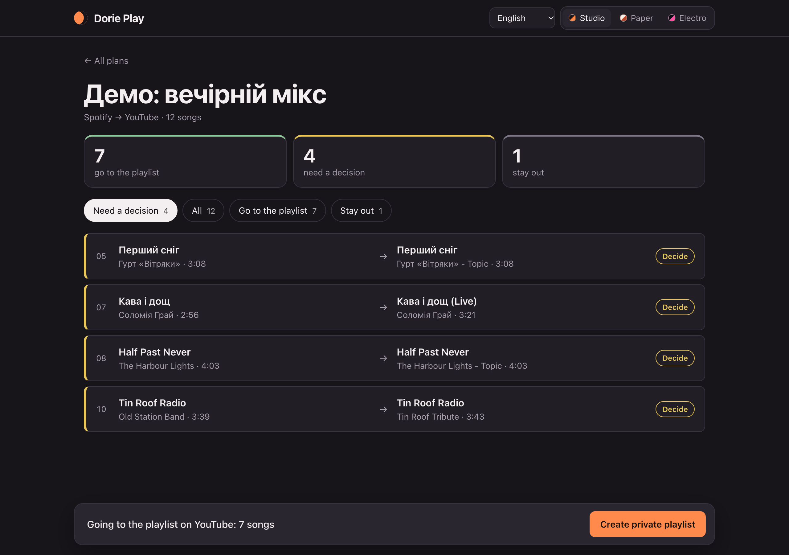

Dorie Play moves your playlists between Spotify, YouTube and SoundCloud, in any direction. It searches first, shows you every match, and creates a private playlist only from the songs you approved. Nothing is transferred blindly.

A playlist from Spotify, YouTube or SoundCloud, and where it should go.
Confident matches are approved for you. Listen to the rest, pick another candidate or leave a song out.
Only approved songs are added. Running it again adds only what is missing — no duplicates.
There is no shared server and no shared key: Dorie Play runs on your own computer and you connect the services with your own API keys. The start page walks you through it.
| Spotify | A free developer app (Client ID). The app owner needs Spotify Premium. Only playlists you own or collaborate on can be read. |
|---|---|
| YouTube | A Google Cloud project with YouTube Data API v3. About 100 searches a day; a long playlist going to YouTube takes several days, and the program continues where it stopped. |
| SoundCloud | API keys, which SoundCloud gives only to Artist Pro subscribers. |
Keys, sign-ins, plans and search answers are kept in the program folder on your computer. Dorie Play talks only to the services you connect, and only when you start a search or a transfer. Read the privacy policy.